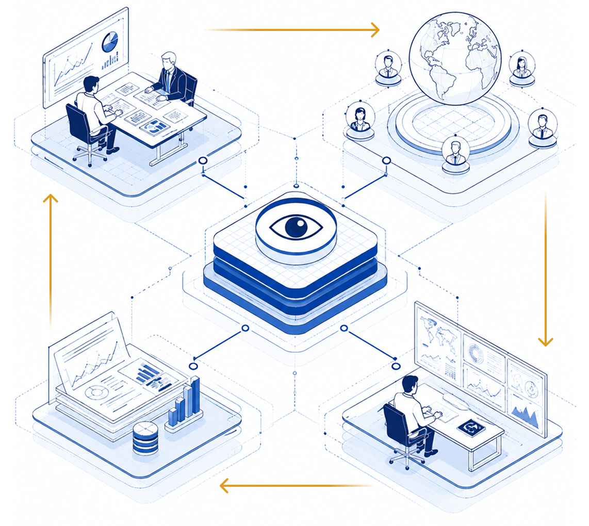
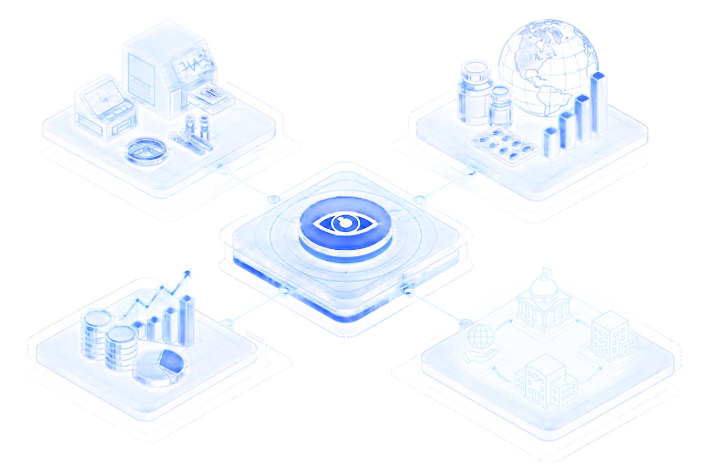

WHAT MAKES THE THIRD EYE DIFFERENT

1
SENIOR-LED
THROUGHOUT
Senior advisers lead the research, interpretation and decision support.
2
DISCREET EXPERT
NETWORK
On-the-ground expert views under agreed confidentiality protocols.
3
CONTINUOUS MONITORING,
SENIOR INTERPRETATION
A standing intelligence engine, continuously monitored and interpreted by senior advisers.
4
INTELLIGENCE THAT
COMPOUNDS
Verified trackers, briefings and decision records that build over time—not one-off decks.
WHO IT'S FOR
Diagnostics & medtech
manufacturers
Pharma, biotech and market-access leaders
Investors
Public institutions and development partners
For leaders who need to anticipate rather than react.
